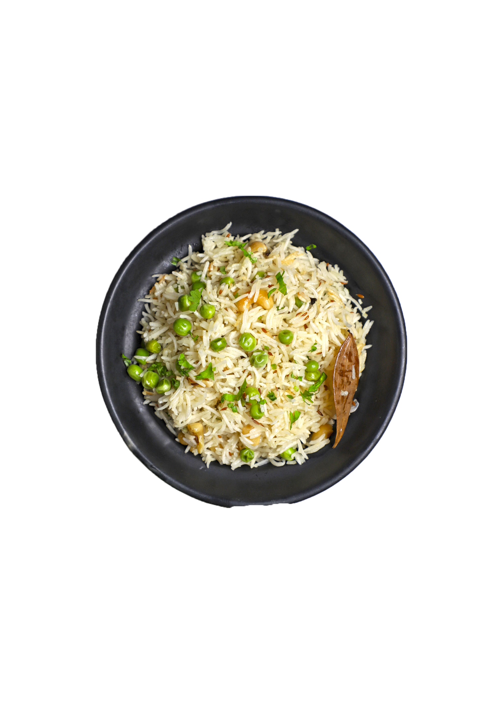

A well-known rice dish with many variations, Mattar Pulao is a South-Asian dish that brings comfort and simplicity to the table. It can be paired with veggies, meat dishes such as shami kabob, and is often eaten with a yogurt sauce called raita.

📝 Ingredients
2 cups basmati rice
1 cup green peas (fresh or frozen)
1 large onion, thinly sliced
2-3 green chilies, slit
2-3 cloves of garlic, minced
1-inch piece of ginger, minced
1 teaspoon cumin seeds
4-5 whole cloves
3-4 green cardamom pods/li>
1-2 bay leaves
1 cinnamon stick
1/2 teaspoon black peppercorns
1 teaspoon garam masala powder
4 cups water (or as needed)
2-3 tablespoons oil or ghee
Salt to taste
Fresh cilantro, chopped (for garnish)
📝 Recipe
Rinse the basmati rice under cold water until the water runs clear.
If using fresh peas, blanch them in boiling water for a couple of minutes, then drain. If using frozen peas, rinse them under warm water to thaw.
Heat oil or ghee in a large pot or deep pan over medium heat.
Add cumin seeds, cloves, cardamom pods, bay leaves, cinnamon stick, and black peppercorns. Sauté for a minute until fragrant.
Add tomatoes & stir. Let sit until tomatoes are softened completely
Add sliced onions and sauté until golden brown.
Add minced garlic, ginger, and green chilies, and sauté for another couple of minutes.
Add the soaked and drained rice to the pot and sauté gently for a few minutes to coat the rice with the oil and spices.
Add green peas and mix well.
Pour in the water, add salt to taste, and stir to combine.
Bring the mixture to a boil, then reduce the heat to low, cover the pot, and simmer until the rice is cooked and the water is absorbed (about 15-20 minutes).
Once the rice is cooked, fluff it gently with a fork.
Sprinkle garam masala powder over the top and mix lightly.
Garnish with fresh cilantro.
Serve hot with raita, pickle, or any curry of your choice.